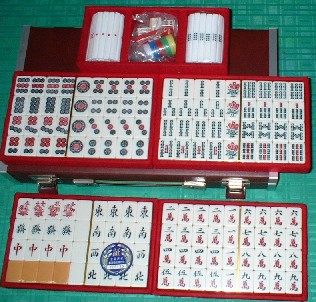

どう見ても最近の合成樹脂牌。絵柄だって、ごく普通。それをなんでアップしたかというと、実はこの牌、彫りが無いので表面がツルツルしている。そこで手触りはみんな白板。いくら摩牌しても絶対に分からん。
麻雀では、よく摩牌が出来るとか出来ないとかが話題になる。そんなことはどーでもいいが、結局は出来ないより出来た方がいいと云うところに落ち着く。まぁそう云えばそうであるが、ときによっては弊害にもなっている。
ツモった牌を知りたければ、さっさと手牌の横に置いて見ればいい。なのにあんなに摩牌してると白板になっちゃううんじゃないかしらと思うほど、こすり続ける人もいる。（^-^；
そんな摩牌など、くだらんこと。そこで「摩牌などしないように。ツモった牌はさっさと手牌のところに持ってくるように」と云っても、彫りがあれば、つい摩牌したくもなる。そこでいっそのこと彫りの部分を埋めてしまえばいいのにと思っていた。
ところがインターネットでそんな牌が売りに出ていた。「おお」と言うので、即購入した。製造したのは、透明牌などユニークな牌を製造しているので有名な市川屋らしい。
どうやって作ってあるのか知らないけれど、どうやら表面に絵柄を印刷して、その上にコーティングしてあるらしい。しかし残念ながら自動卓に対応していない。
さすがにこの時代、麻雀するなら全自動。そこでせっかくのノン摩牌も、いまだに一度も使ったことはない。早いとこ自動卓は全部ノン摩牌セットにならないかな。
|